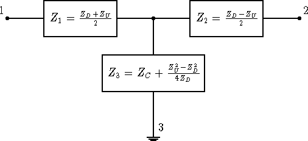

Commercial transmitters have unbalanced outputs. That is the output is taken between the output connectors center conductor and the transmitter case. I will call the transmitter case ground. That is, whenever an impedance is measured between a point in the circuit and ground, it means that the point is close to the transmitter case, and the impedance is measured between that point and the transmitter case.
The two wires
of our balanced transmission line are two connections with some
impedance across them from the antenna. In addition, the lines
will have an impedance to ground. For example a quarter
wave length of twinlead, both wires connected together and driven
against ground will would look like a quarter wave monopole.
If the antenna is not well balanced or if one of the transmission
line wires runs close to another conductor, the line can be
unbalanced to some extent. That means that the impedance measured
between one of the lines and ground is not the same as between
the other line and ground. A general two-wire transmission line
ending up near our transmitter can be represented as a T equivalent
circuit as shown in figure 4. If I put a current into
one wire of the transmission line and remove it from the other,
this is the differential mode of the line. The resulting impedance
I will call ZD or the differential mode impedance. If I connect
both wires together, and drive them against ground, I call
the resulting impedance the common mode impedance ZC . Finally, if the
impedance from each wire to ground is not the same, this is unbalance
which I'll represent as ZU . The labeling in figure 4 shows
how these impedances relate to the three impedances of the T equivalent
circuit. Notice if the twinlead is well balanced that ZU = 0 ,
|  |
These impedances can be measured with inexpensive equipment.
One of my antennas is a ``dipole'' about 60 feet on a leg running
around the outside of my 1 story house. It is fed by about 30 feet
of 300 ohm TV twinlead. The legs of the ``dipole''
are not straight, and it isn't symmetric about the feedpoint since
the shack is at a corner of the house. I have measured
ZD , ZU , and ZC , at 3.52 MHz to be:
| ZD | = | 158 + j 533 | |
| ZU | = | 224 + j 182 | |
| ZC | = | 887 + j 622 . |